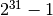

4.2. 特征提取¶
模块 sklearn.feature_extraction 可以用来提取多种格式的数据集中，符合机器学习算法中支持的特征，如文本和图像
Note
特征提取与 特征选择(Feature selection) 特征选择有很大的不同: 模型意义在于把复杂的数据，如文本和图像，转化为数字特征，从而在机器学习中使用。后者是一个机器学习中应用这些特征的方法
4.2.1. 加载字典的中的特征¶
类 DictVectorizer 可以把特征向量转化成标准的Python字典对象的一个列表，
同时也是被scikit-learn的估计器使用的一个NumPy/SciPy体现(ndarray)
即使处理时并不是特别快，python的字典有易于使用的优势，适用于稀疏情景(缺失特征不会被存储)，存储特征的名字和值。
类 DictVectorizer 实现了所谓 one-of-K 或 “one-hot” 的方法来使用范畴(即离散的)特征 。
范畴特征是一个键值对，其值被约束为离散的无序列表
(如话题标志，对象类型，标签，名字等)。
在下面例子中 “city” 是一个绝对变量而 disc是一个 “temperature” 传统的数值特征
>>> measurements = [
... {'city': 'Dubai', 'temperature': 33.},
... {'city': 'London', 'temperature': 12.},
... {'city': 'San Fransisco', 'temperature': 18.},
... ]
>>> from sklearn.feature_extraction import DictVectorizer
>>> vec = DictVectorizer()
>>> vec.fit_transform(measurements).toarray()
array([[ 1., 0., 0., 33.],
[ 0., 1., 0., 12.],
[ 0., 0., 1., 18.]])
>>> vec.get_feature_names()
['city=Dubai', 'city=London', 'city=San Fransisco', 'temperature']
类 DictVectorizer 也是一个有用的转化形式，主要应用于自然语言处理(NLP)中分类器的训练模型，典型应用于在兴趣文本中提取特征序列.
比如说，我们有一个算法来提取词性标签作为补充标签，来训练序列分类器(如chunker概括大意)。 下面的字典展示了一个小例子，提取在例句 ‘The cat sat on the mat.’ 中sat周围的特征:
>>> pos_window = [
... {
... 'word-2': 'the',
... 'pos-2': 'DT',
... 'word-1': 'cat',
... 'pos-1': 'NN',
... 'word+1': 'on',
... 'pos+1': 'PP',
... },
... # in a real application one would extract many such dictionaries
... ]
以上形式可以被向量化成一个稀疏二维矩阵，从而作为参数传递给分类器(或经过:class:text.TfidfTransformer 的加工标准化):
>>> vec = DictVectorizer()
>>> pos_vectorized = vec.fit_transform(pos_window)
>>> pos_vectorized
<1x6 sparse matrix of type '<... 'numpy.float64'>'
with 6 stored elements in Compressed Sparse ... format>
>>> pos_vectorized.toarray()
array([[ 1., 1., 1., 1., 1., 1.]])
>>> vec.get_feature_names()
['pos+1=PP', 'pos-1=NN', 'pos-2=DT', 'word+1=on', 'word-1=cat', 'word-2=the']
正如你所想的，如果在文档全集中进行提取，结果矩阵将会非常巨大(大量one-hot-features)，
他们中的大部分通常将会是0。所以为了使这个矩阵的稀疏数据结构存储在内存中，类 DictVectorizer 默认使用了一个 scipy.sparse 矩阵
而不是 numpy.ndarray。
4.2.2. 特征哈希¶
类 FeatureHasher 是一个快速且低内存消耗的向量化方法，使用了 feature hashing 技术，或可称为”hashing trick”。
没有像矢量化那样，为计算训练得到的特征建立哈西表，类 FeatureHasher 的实例使用了一个哈希函数来直接确定特征在样本矩阵中的列号。
这样在可检查性上增加了速度减少了内存开销。这个类不会记住输入特征的形状，也没有 inverse_transform 方法。
因为哈希函数会造成不相关特征间的冲突，所以这里使用了带有签名的哈希函数。哈希值的签名决定了输出矩阵中特征的签名。 在这种情况下，哈希冲突可能会消失，不会出现错误。且所有输出矩阵的期望都是0。
如果传递 non_negative=True 参数给构造器，那么将使用绝对值。这将减少一些对冲突的控制，但是允许输出作为参数传递给估计器如:
sklearn.naive_bayes.MultinomialNB 或
sklearn.feature_selection.chi2
特征选择器要求非负的输入。
类 FeatureHasher 接受mapping(如python的字典和其在 collections 模块中的变体)，
使用键值对 (feature, value) ，或是使用字符串string，取决于构造器参数 input_type 。
Mapping 被看成键值对的列表，其中单个字符串有一个隐式的值: 1 ， 所以 ['feat1', 'feat2', 'feat3'] 被转化为 [('feat1', 1), ('feat2', 1), ('feat3', 1)] 。
如果一个单独特征在一个样本中出现了多次，与之相关的次数将被加和(所以 ('feat', 2) and ('feat', 3.5) 转化成 ('feat', 5.5) )。
类 FeatureHasher 的输出通常是一个CSR格式的 scipy.sparse 稀疏矩阵。
特征哈希可以在文本分类中使用，
但是，与 text.CountVectorizer 不同,
为使分类器/哈希联合使用，请参考下方的 Vectorizing a large text corpus with the hashing trick
举个例子，假设有一个词级别的自然语言处理任务，需要在 (token, part_of_speech) 键值对中
提取特征，你可以使用Python的生成器函数来提取:
def token_features(token, part_of_speech):
if token.isdigit():
yield "numeric"
else:
yield "token={}".format(token.lower())
yield "token,pos={},{}".format(token, part_of_speech)
if token[0].isupper():
yield "uppercase_initial"
if token.isupper():
yield "all_uppercase"
yield "pos={}".format(part_of_speech)
之后 raw_X 为了可以传入 FeatureHasher.transform
可以通过如下方式构建:
raw_X = (token_features(tok, pos_tagger(tok)) for tok in corpus)
然后传入哈希:
hasher = FeatureHasher(input_type='string')
X = hasher.transform(raw_X)
得到一个 scipy.sparse 类型的的矩阵 X 。
注意对使用生成器的理解Note the use of a generator comprehension, 它将为特征哈希引入懒加载机制: 词令牌(token)只在哈希要求时处理。
4.2.2.1. 实现细节¶
类 FeatureHasher 使用了有符号的MurmurHash3的变体，
因此导致 (同时由于 scipy.sparse 的限制),
现在支持的最大特征数量为  。
特征哈希的原始形式源于 Weinberger et al。
使用了两个独立的哈希函数  和
和  来分别决定列下标和特征签名。
现有的实现是基于假设：MurmurHash3的符号位与其他位独立。
来分别决定列下标和特征签名。
现有的实现是基于假设：MurmurHash3的符号位与其他位独立。
因为从哈希函数到列标只使用了简单的取模操作，因此建议使用二次方作为 n_features 的参数，
否则特征不会平均的分布到列中。
References:
- Kilian Weinberger, Anirban Dasgupta, John Langford, Alex Smola and Josh Attenberg (2009). Feature hashing for large scale multitask learning. Proc. ICML.
- MurmurHash3.
4.2.3. 文本特征提取¶
4.2.3.1. 体现：词袋模型¶
文本分析是机器学习算法的主要应用领域。然而，符号文字序列不能直接传递给这些算法， 因为他们要求数值的固定长度的矩阵特征而不是可变长度的文本文档。
为了解决这个问题，scikit-learn为数值特征提取最常见的方式提供了一系列工具，它们是:
- tokenizing 对每个可能的词令牌分成字符串并赋予整形的id，比如使用空格和作为令牌分割依据。
- counting 每个词令牌在文档中的出现次数。
- normalizing 在大多数的文档 / 样本中，可以减少重要的次令牌的权重。
在这个体系中，特征和样本有如下定义:
- 每个 独立令牌出现频率 (归一化或未归一化) 被当做一个 (特征)feature 。
- document(文本) 中所有的令牌频率向量被看做一个多元 sample(样本) 。
因此文本的集合可被表示为矩阵形式，每行一条文本，每列对应每个文本中出现的词令牌(如单个词)。
我们称 vectorization(向量化) 是转化文本集合为数值向量的普遍方法。这种特殊思想，包括令牌化，统计频数和归一化，被称为 Bag of Words(词袋子) 或 “Bag of n-grams” 模型。文本被词出现频率描述，完全忽略词的相对位置信息。
4.2.3.2. 稀疏¶
因为大多数文本通常只使用文本词向量全集中的一个小子集，结果矩阵将有许多特征的值为0(经常超过99%)。
例如，一个10000个短文本集的例子(如Emails)将使用总共大约100000个不同的词，而每个文本(Email)将使用100到1000个单词。
为了可以在内存中储存这种矩阵，同时加速线性代数的矩阵 / 向量运算，所以通常以稀疏形式实现，例如可参考在包 scipy.sparse 中的实现。
4.2.3.3. 通常向量化使用Common Vectorizer usage¶
CountVectorizer 在单个类中实现了令牌化和出现频数统计:
>>> from sklearn.feature_extraction.text import CountVectorizer
这个模型有很多参数，然而初始值非常合理(请参考 reference documentation 获取更多细节):
>>> vectorizer = CountVectorizer(min_df=1)
>>> vectorizer
CountVectorizer(analyzer=...'word', binary=False, decode_error=...'strict',
dtype=<... 'numpy.int64'>, encoding=...'utf-8', input=...'content',
lowercase=True, max_df=1.0, max_features=None, min_df=1,
ngram_range=(1, 1), preprocessor=None, stop_words=None,
strip_accents=None, token_pattern=...'(?u)\\b\\w\\w+\\b',
tokenizer=None, vocabulary=None)
让我们使用它来使简单文本全集令牌化，并统计词频:
>>> corpus = [
... 'This is the first document.',
... 'This is the second second document.',
... 'And the third one.',
... 'Is this the first document?',
... ]
>>> X = vectorizer.fit_transform(corpus)
>>> X
<4x9 sparse matrix of type '<... 'numpy.int64'>'
with 19 stored elements in Compressed Sparse ... format>
初始设定是，令牌化字符串，提取至少两个字母的词。做这一步的函数可以显式的被调用:
>>> analyze = vectorizer.build_analyzer()
>>> analyze("This is a text document to analyze.") == (
... ['this', 'is', 'text', 'document', 'to', 'analyze'])
True
每个在拟合中被分析器发现的词被指派了一个独一无二的索引，在结果矩阵中表示一列。对于列的翻译可以被如下方式检索:
>>> vectorizer.get_feature_names() == (
... ['and', 'document', 'first', 'is', 'one',
... 'second', 'the', 'third', 'this'])
True
>>> X.toarray()
array([[0, 1, 1, 1, 0, 0, 1, 0, 1],
[0, 1, 0, 1, 0, 2, 1, 0, 1],
[1, 0, 0, 0, 1, 0, 1, 1, 0],
[0, 1, 1, 1, 0, 0, 1, 0, 1]]...)
从列标到特征名的反转映射储存在向量化类 vectorizer 的属性 vocabulary_ 中:
>>> vectorizer.vocabulary_.get('document')
1
因此在训练集里未出现的的词将在将来调用transform方法时被完全忽略:
>>> vectorizer.transform(['Something completely new.']).toarray()
...
array([[0, 0, 0, 0, 0, 0, 0, 0, 0]]...)
注意在之前的集合中第一个和最后一个文本事实上是同一个词，因此被编码成相同的向量。特别是最后一个字符是询问形式时我们丢失了他的信息。 为了防止词组顺序颠倒,我们除了提取一元模型(1-Gram，即单字单词)，也可以提取二元模型(2-Gram):
>>> bigram_vectorizer = CountVectorizer(ngram_range=(1, 2),
... token_pattern=r'\b\w+\b', min_df=1)
>>> analyze = bigram_vectorizer.build_analyzer()
>>> analyze('Bi-grams are cool!') == (
... ['bi', 'grams', 'are', 'cool', 'bi grams', 'grams are', 'are cool'])
True
矢量化提取的词因此变得很大，同时可以在定位模式时消歧义:
>>> X_2 = bigram_vectorizer.fit_transform(corpus).toarray()
>>> X_2
...
array([[0, 0, 1, 1, 1, 1, 1, 0, 0, 0, 0, 0, 1, 1, 0, 0, 0, 0, 1, 1, 0],
[0, 0, 1, 0, 0, 1, 1, 0, 0, 2, 1, 1, 1, 0, 1, 0, 0, 0, 1, 1, 0],
[1, 1, 0, 0, 0, 0, 0, 0, 1, 0, 0, 0, 1, 0, 0, 1, 1, 1, 0, 0, 0],
[0, 0, 1, 1, 1, 1, 0, 1, 0, 0, 0, 0, 1, 1, 0, 0, 0, 0, 1, 0, 1]]...)
特别的，疑问形式如 “Is this” 只在最后一个文档中显示:
>>> feature_index = bigram_vectorizer.vocabulary_.get('is this')
>>> X_2[:, feature_index]
array([0, 0, 0, 1]...)
4.2.3.4. Tf–idf算法 字词权值¶
在一个巨大的文本集中，一些词会出现很多次(如 “the”, “a”, “is” in English)，且带有较少的有意义的信息。 如果我们直接把数量输入到分类器中则这些频繁词组会掩盖住那些我们关注但很少出现的词。
为了重新计算特征权重，将其转化成适合被分类器使用的浮点值，使用tf-idf转化非常普遍。
Tf意思是词语频率 term-frequency 而tf–idf意思是词语频率与转置文档频率( inverse document-frequency )的乘积。 它源于一个词权重的信息检索方式(作为搜索引擎结果的评级函数)，同时在文本分类和聚类中表现良好。
归一化过程已经实现于类 :class:`TfidfTransformer`中:
>>> from sklearn.feature_extraction.text import TfidfTransformer
>>> transformer = TfidfTransformer()
>>> transformer
TfidfTransformer(norm=...'l2', smooth_idf=True, sublinear_tf=False,
use_idf=True)
请参考 reference documentation 获取其他参数的更多细节。
让我们以下方的词频为例。第一个词在任何时候都100%显示，其他两个特征只占文档中少于50%的比例:
>>> counts = [[3, 0, 1],
... [2, 0, 0],
... [3, 0, 0],
... [4, 0, 0],
... [3, 2, 0],
... [3, 0, 2]]
...
>>> tfidf = transformer.fit_transform(counts)
>>> tfidf
<6x3 sparse matrix of type '<... 'numpy.float64'>'
with 9 stored elements in Compressed Sparse ... format>
>>> tfidf.toarray()
array([[ 0.85..., 0. ..., 0.52...],
[ 1. ..., 0. ..., 0. ...],
[ 1. ..., 0. ..., 0. ...],
[ 1. ..., 0. ..., 0. ...],
[ 0.55..., 0.83..., 0. ...],
[ 0.63..., 0. ..., 0.77...]])
每一行都被正则化，来适用欧几里得标准，每个特征的权重被方法 fit 计算，调用结果被存储在模型参数中:
>>> transformer.idf_
array([ 1. ..., 2.25..., 1.84...])
因为 tf–idf 在特征提取中经常被使用，所以有另一个类: TfidfVectorizer 在单个类中结合了所有类和类中的选择:
>>> from sklearn.feature_extraction.text import TfidfVectorizer
>>> vectorizer = TfidfVectorizer(min_df=1)
>>> vectorizer.fit_transform(corpus)
...
<4x9 sparse matrix of type '<... 'numpy.float64'>'
with 19 stored elements in Compressed Sparse ... format>
虽然 tf–idf 正则化经常被使用，但是经常有一种情况是二元变量显示会提供更好的特征。可以使用类 CountVectorizer 中的参数 binary 来达到这一目的。
特别的，一些估计器，如 朴素贝叶斯 伯努利模型 显式地使用离散的布尔值随机变量，同时，非常短的文本可能会影响tf-idf的值，而相比之下
二元表示(binary occurrence)会更加稳定。
通常情况下最好的提取特征的调整参数方式是使用基于网格搜索的交叉验证，例如使用管道(pipelining)传输特征提取器和分类器:
4.2.3.5. 文档编码 转码¶
文本由字组成，而文件由字节组成。字节转化成字符依照一定的编码(encoding)方式。 为了在Python中使用文本文档，这些字节需要被解码(decoded)成Unicode字符集。 常见的编码方式有 ASCII, Latin-1 (Western Europe), KOI8-R (Russian) 和通用编码方式 UTF-8 与 UTF-16。或许也其他的方式。 .. note:
一个编码也被称为“字符集”，但是这个名词是不准确的: 一些编码可以用单个字符表示。
scikit-learn中的文本特征提取器知道如何解码文本文件，但是只能通过告诉它在何种编码方式之下才行。
类 CountVectorizer 有一个参数 encoding 来实现这一目的。
对于现代文本文档，正确的编码方式大多是UTF-8，它也是默认编码方式 (encoding="utf-8")。
如果你的加载的文本不是UTF-8编码，你将会得到一个 UnicodeDecodeError 。矢量化方法可以通过设定 decode_error 参数值为 "ignore"
或 "replace" 来不抛出这一错误。参考Python的函数 bytes.decode 得到更多细节(在Python命令行里输入 help(bytes.decode) )。
如果在解码时遇到了困难，可以尝试以下方法:
- 找到文本的实际编码方式。文件的头部或是README文件可以告诉你编码，或是一些标准编码，你可以从文本的来源处推断编码方式。
- 你可以用通常方法，使用UNIX指令
file找到它的编码方式。Python的chardet模块含有一个脚本chardetect.py，可以得到大概的编码方式，但是不应依赖它，因为并不总是正确。 - 你可以尝试UFT-8并忽略错误。解码字节数组，使用``bytes.decode(errors=’replace’)`` 来用一个无意义的字符替换所有解码错误，或在矢量化方法中设置
decode_error='replace'。这可能会破坏特征的使用。 - 真实文本可能有不同来源，因此用了不同编码方式，或使用错误的解码，即与编码方式不对应。这在网络中获取的文本中很常见。python的包 ftfy 可以自动检查出一些解码错误的类，所以可以尝试解码未知文本为
latin-1之后使用ftfy来修正错误。 - 如果文本的编码混乱，那么它将很难整理分类(如20 Newsgroups dataset的例子)。你可以把他们退回到简单的字节编码方式，如
latin-1。一些文本会显示错误，但是至少相同的字节序列意味着相同的特征。
例如，下面的代码片段使用 chardet (没有加入scikit-learn中，需要另外安装)来计算出编码方式。
之后它把文本矢量化并打印学习的单词(特征)。输出在下方给出。
>>> import chardet
>>> text1 = b"Sei mir gegr\xc3\xbc\xc3\x9ft mein Sauerkraut"
>>> text2 = b"holdselig sind deine Ger\xfcche"
>>> text3 = b"\xff\xfeA\x00u\x00f\x00 \x00F\x00l\x00\xfc\x00g\x00e\x00l\x00n\x00 \x00d\x00e\x00s\x00 \x00G\x00e\x00s\x00a\x00n\x00g\x00e\x00s\x00,\x00 \x00H\x00e\x00r\x00z\x00l\x00i\x00e\x00b\x00c\x00h\x00e\x00n\x00,\x00 \x00t\x00r\x00a\x00g\x00 \x00i\x00c\x00h\x00 \x00d\x00i\x00c\x00h\x00 \x00f\x00o\x00r\x00t\x00"
>>> decoded = [x.decode(chardet.detect(x)['encoding'])
... for x in (text1, text2, text3)]
>>> v = CountVectorizer().fit(decoded).vocabulary_
>>> for term in v: print(v)
(取决于 chardet 的版本，或许会返回第一个值错误的结果。)
更详细的介绍Unicode和字符编码，参考 Joel Spolsky 的 Absolute Minimum Every Software Developer Must Know About Unicode.
4.2.3.6. 应用与例子¶
词袋子模型表示法非常简单但在实际中很有用。
特别的，在监督学习设置( supervised setting )中它能够把快速和可伸缩的线性模型相结合，来训练分类器( document classifiers )，例如:
在 unsupervised setting 中它可以为相似文档分类，同时应用聚类方法，比如 K-means :
最后，通过松弛聚类的约束条件(relaxing the hard assignment constraint of clustering)，发现文集中的主题是可能的，如使用 Non-negative matrix factorization (NMF or NNMF):
4.2.3.7. 词袋子模型表示法的限制¶
A collection of unigrams (what bag of words is) cannot capture phrases and multi-word expressions, effectively disregarding any word order dependence. Additionally, the bag of words model doesn’t account for potential misspellings or word derivations.
N-grams to the rescue! Instead of building a simple collection of unigrams (n=1), one might prefer a collection of bigrams (n=2), where occurrences of pairs of consecutive words are counted.
One might alternatively consider a collection of character n-grams, a representation resilient against misspellings and derivations.
For example, let’s say we’re dealing with a corpus of two documents:
['words', 'wprds']. The second document contains a misspelling
of the word ‘words’.
A simple bag of words representation would consider these two as
very distinct documents, differing in both of the two possible features.
A character 2-gram representation, however, would find the documents
matching in 4 out of 8 features, which may help the preferred classifier
decide better:
>>> ngram_vectorizer = CountVectorizer(analyzer='char_wb', ngram_range=(2, 2), min_df=1)
>>> counts = ngram_vectorizer.fit_transform(['words', 'wprds'])
>>> ngram_vectorizer.get_feature_names() == (
... [' w', 'ds', 'or', 'pr', 'rd', 's ', 'wo', 'wp'])
True
>>> counts.toarray().astype(int)
array([[1, 1, 1, 0, 1, 1, 1, 0],
[1, 1, 0, 1, 1, 1, 0, 1]])
In the above example, 'char_wb analyzer is used, which creates n-grams
only from characters inside word boundaries (padded with space on each
side). The 'char' analyzer, alternatively, creates n-grams that
span across words:
>>> ngram_vectorizer = CountVectorizer(analyzer='char_wb', ngram_range=(5, 5), min_df=1)
>>> ngram_vectorizer.fit_transform(['jumpy fox'])
...
<1x4 sparse matrix of type '<... 'numpy.int64'>'
with 4 stored elements in Compressed Sparse ... format>
>>> ngram_vectorizer.get_feature_names() == (
... [' fox ', ' jump', 'jumpy', 'umpy '])
True
>>> ngram_vectorizer = CountVectorizer(analyzer='char', ngram_range=(5, 5), min_df=1)
>>> ngram_vectorizer.fit_transform(['jumpy fox'])
...
<1x5 sparse matrix of type '<... 'numpy.int64'>'
with 5 stored elements in Compressed Sparse ... format>
>>> ngram_vectorizer.get_feature_names() == (
... ['jumpy', 'mpy f', 'py fo', 'umpy ', 'y fox'])
True
The word boundaries-aware variant char_wb is especially interesting
for languages that use white-spaces for word separation as it generates
significantly less noisy features than the raw char variant in
that case. For such languages it can increase both the predictive
accuracy and convergence speed of classifiers trained using such
features while retaining the robustness with regards to misspellings and
word derivations.
While some local positioning information can be preserved by extracting n-grams instead of individual words, bag of words and bag of n-grams destroy most of the inner structure of the document and hence most of the meaning carried by that internal structure.
In order to address the wider task of Natural Language Understanding, the local structure of sentences and paragraphs should thus be taken into account. Many such models will thus be casted as “Structured output” problems which are currently outside of the scope of scikit-learn.
4.2.3.8. Vectorizing a large text corpus with the hashing trick¶
The above vectorization scheme is simple but the fact that it holds an in-
memory mapping from the string tokens to the integer feature indices (the
vocabulary_ attribute) causes several problems when dealing with large
datasets:
- the larger the corpus, the larger the vocabulary will grow and hence the memory use too,
- fitting requires the allocation of intermediate data structures of size proportional to that of the original dataset.
- building the word-mapping requires a full pass over the dataset hence it is not possible to fit text classifiers in a strictly online manner.
- pickling and un-pickling vectorizers with a large
vocabulary_can be very slow (typically much slower than pickling / un-pickling flat data structures such as a NumPy array of the same size), - it is not easily possible to split the vectorization work into concurrent sub
tasks as the
vocabulary_attribute would have to be a shared state with a fine grained synchronization barrier: the mapping from token string to feature index is dependent on ordering of the first occurrence of each token hence would have to be shared, potentially harming the concurrent workers’ performance to the point of making them slower than the sequential variant.
It is possible to overcome those limitations by combining the “hashing trick”
(特征哈希) implemented by the
sklearn.feature_extraction.FeatureHasher class and the text
preprocessing and tokenization features of the CountVectorizer.
This combination is implementing in HashingVectorizer,
a transformer class that is mostly API compatible with CountVectorizer.
HashingVectorizer is stateless,
meaning that you don’t have to call fit on it:
>>> from sklearn.feature_extraction.text import HashingVectorizer
>>> hv = HashingVectorizer(n_features=10)
>>> hv.transform(corpus)
...
<4x10 sparse matrix of type '<... 'numpy.float64'>'
with 16 stored elements in Compressed Sparse ... format>
You can see that 16 non-zero feature tokens were extracted in the vector
output: this is less than the 19 non-zeros extracted previously by the
CountVectorizer on the same toy corpus. The discrepancy comes from
hash function collisions because of the low value of the n_features parameter.
In a real world setting, the n_features parameter can be left to its
default value of 2 ** 20 (roughly one million possible features). If memory
or downstream models size is an issue selecting a lower value such as 2 **
18 might help without introducing too many additional collisions on typical
text classification tasks.
Note that the dimensionality does not affect the CPU training time of
algorithms which operate on CSR matrices (LinearSVC(dual=True),
Perceptron, SGDClassifier, PassiveAggressive) but it does for
algorithms that work with CSC matrices (LinearSVC(dual=False), Lasso(),
etc).
Let’s try again with the default setting:
>>> hv = HashingVectorizer()
>>> hv.transform(corpus)
...
<4x1048576 sparse matrix of type '<... 'numpy.float64'>'
with 19 stored elements in Compressed Sparse ... format>
We no longer get the collisions, but this comes at the expense of a much larger dimensionality of the output space. Of course, other terms than the 19 used here might still collide with each other.
The HashingVectorizer also comes with the following limitations:
- it is not possible to invert the model (no
inverse_transformmethod), nor to access the original string representation of the features, because of the one-way nature of the hash function that performs the mapping. - it does not provide IDF weighting as that would introduce statefulness in the
model. A
TfidfTransformercan be appended to it in a pipeline if required.
4.2.3.9. Performing out-of-core scaling with HashingVectorizer¶
An interesting development of using a HashingVectorizer is the ability
to perform out-of-core scaling. This means that we can learn from data that
does not fit into the computer’s main memory.
A strategy to implement out-of-core scaling is to stream data to the estimator
in mini-batches. Each mini-batch is vectorized using HashingVectorizer
so as to guarantee that the input space of the estimator has always the same
dimensionality. The amount of memory used at any time is thus bounded by the
size of a mini-batch. Although there is no limit to the amount of data that can
be ingested using such an approach, from a practical point of view the learning
time is often limited by the CPU time one wants to spend on the task.
For a full-fledged example of out-of-core scaling in a text classification task see Out-of-core classification of text documents.
4.2.3.10. Customizing the vectorizer classes¶
It is possible to customize the behavior by passing a callable to the vectorizer constructor:
>>> def my_tokenizer(s):
... return s.split()
...
>>> vectorizer = CountVectorizer(tokenizer=my_tokenizer)
>>> vectorizer.build_analyzer()(u"Some... punctuation!") == (
... ['some...', 'punctuation!'])
True
In particular we name:
preprocessor: a callable that takes an entire document as input (as a single string), and returns a possibly transformed version of the document, still as an entire string. This can be used to remove HTML tags, lowercase the entire document, etc.tokenizer: a callable that takes the output from the preprocessor and splits it into tokens, then returns a list of these.analyzer: a callable that replaces the preprocessor and tokenizer. The default analyzers all call the preprocessor and tokenizer, but custom analyzers will skip this. N-gram extraction and stop word filtering take place at the analyzer level, so a custom analyzer may have to reproduce these steps.
(Lucene users might recognize these names, but be aware that scikit-learn concepts may not map one-to-one onto Lucene concepts.)
To make the preprocessor, tokenizer and analyzers aware of the model
parameters it is possible to derive from the class and override the
build_preprocessor, build_tokenizer and build_analyzer
factory methods instead of passing custom functions.
Some tips and tricks:
If documents are pre-tokenized by an external package, then store them in files (or strings) with the tokens separated by whitespace and pass
analyzer=str.splitFancy token-level analysis such as stemming, lemmatizing, compound splitting, filtering based on part-of-speech, etc. are not included in the scikit-learn codebase, but can be added by customizing either the tokenizer or the analyzer. Here’s a
CountVectorizerwith a tokenizer and lemmatizer using NLTK:>>> from nltk import word_tokenize >>> from nltk.stem import WordNetLemmatizer >>> class LemmaTokenizer(object): ... def __init__(self): ... self.wnl = WordNetLemmatizer() ... def __call__(self, doc): ... return [self.wnl.lemmatize(t) for t in word_tokenize(doc)] ... >>> vect = CountVectorizer(tokenizer=LemmaTokenizer())(Note that this will not filter out punctuation.)
Customizing the vectorizer can also be useful when handling Asian languages that do not use an explicit word separator such as whitespace.
4.2.4. Image feature extraction¶
4.2.4.1. Patch extraction¶
The extract_patches_2d function extracts patches from an image stored
as a two-dimensional array, or three-dimensional with color information along
the third axis. For rebuilding an image from all its patches, use
reconstruct_from_patches_2d. For example let use generate a 4x4 pixel
picture with 3 color channels (e.g. in RGB format):
>>> import numpy as np
>>> from sklearn.feature_extraction import image
>>> one_image = np.arange(4 * 4 * 3).reshape((4, 4, 3))
>>> one_image[:, :, 0] # R channel of a fake RGB picture
array([[ 0, 3, 6, 9],
[12, 15, 18, 21],
[24, 27, 30, 33],
[36, 39, 42, 45]])
>>> patches = image.extract_patches_2d(one_image, (2, 2), max_patches=2,
... random_state=0)
>>> patches.shape
(2, 2, 2, 3)
>>> patches[:, :, :, 0]
array([[[ 0, 3],
[12, 15]],
[[15, 18],
[27, 30]]])
>>> patches = image.extract_patches_2d(one_image, (2, 2))
>>> patches.shape
(9, 2, 2, 3)
>>> patches[4, :, :, 0]
array([[15, 18],
[27, 30]])
Let us now try to reconstruct the original image from the patches by averaging on overlapping areas:
>>> reconstructed = image.reconstruct_from_patches_2d(patches, (4, 4, 3))
>>> np.testing.assert_array_equal(one_image, reconstructed)
The PatchExtractor class works in the same way as
extract_patches_2d, only it supports multiple images as input. It is
implemented as an estimator, so it can be used in pipelines. See:
>>> five_images = np.arange(5 * 4 * 4 * 3).reshape(5, 4, 4, 3)
>>> patches = image.PatchExtractor((2, 2)).transform(five_images)
>>> patches.shape
(45, 2, 2, 3)
4.2.4.2. Connectivity graph of an image¶
Several estimators in the scikit-learn can use connectivity information between features or samples. For instance Ward clustering (Hierarchical clustering) can cluster together only neighboring pixels of an image, thus forming contiguous patches:

For this purpose, the estimators use a ‘connectivity’ matrix, giving which samples are connected.
The function img_to_graph returns such a matrix from a 2D or 3D
image. Similarly, grid_to_graph build a connectivity matrix for
images given the shape of these image.
These matrices can be used to impose connectivity in estimators that use connectivity information, such as Ward clustering (Hierarchical clustering), but also to build precomputed kernels, or similarity matrices.